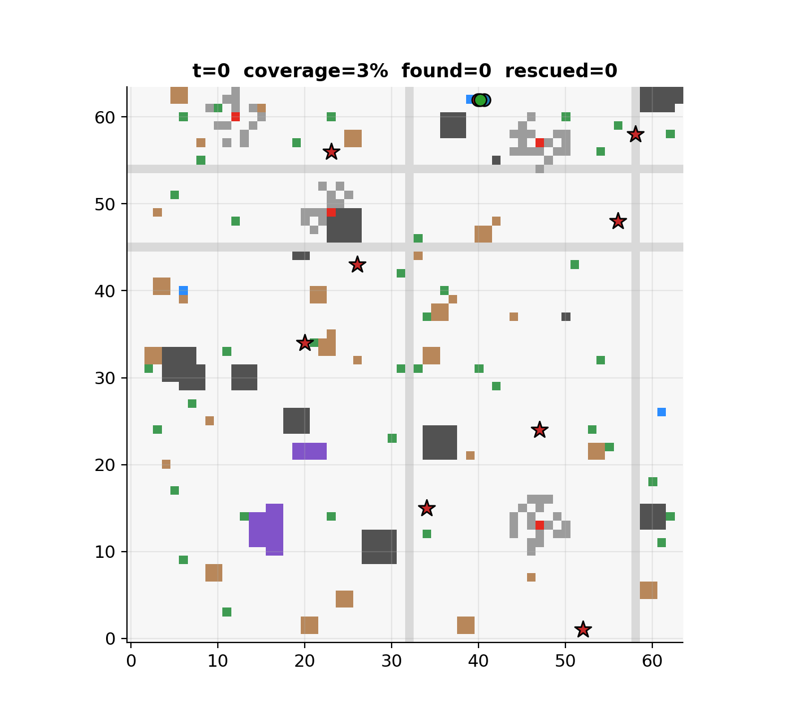
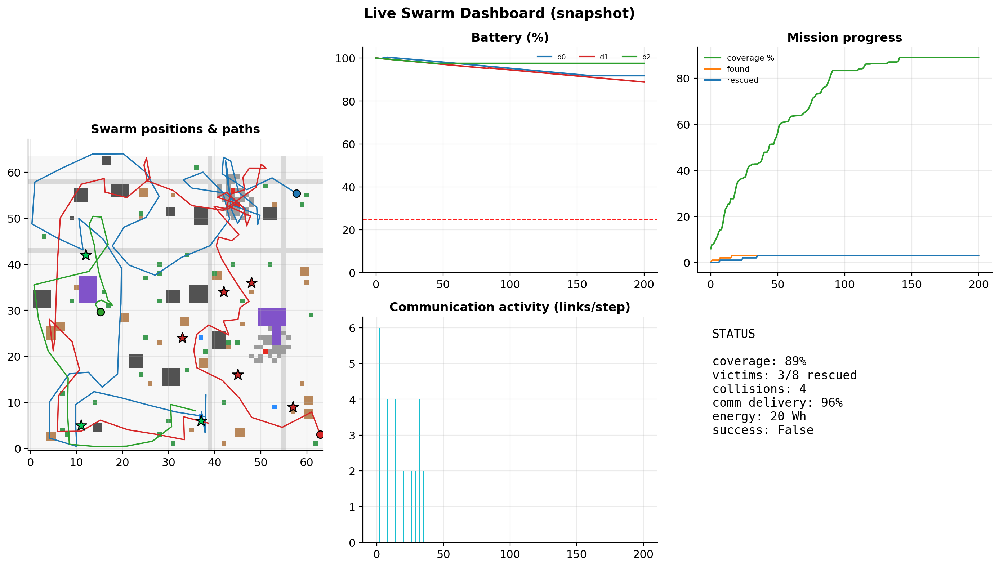
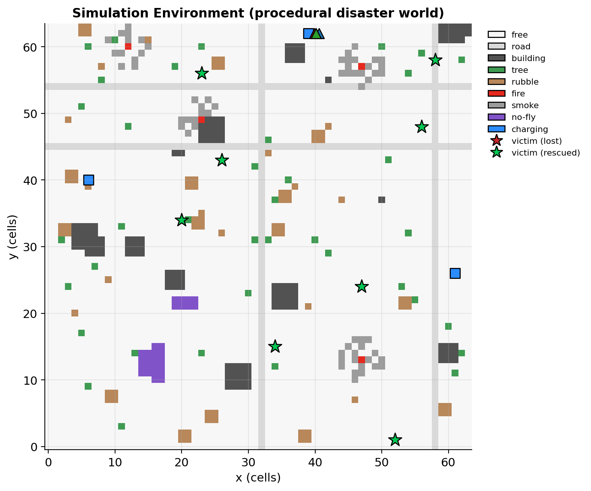
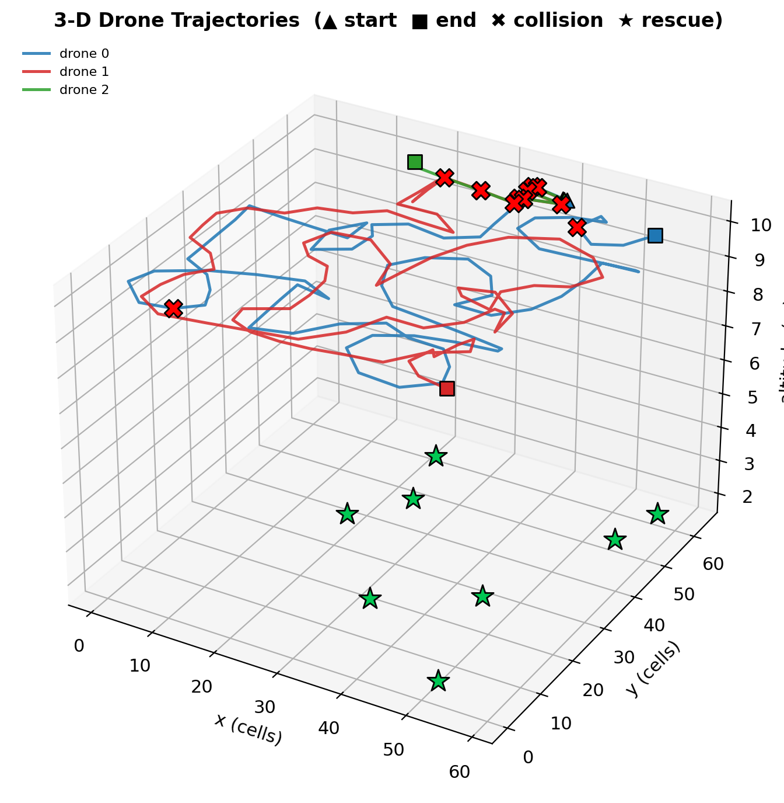
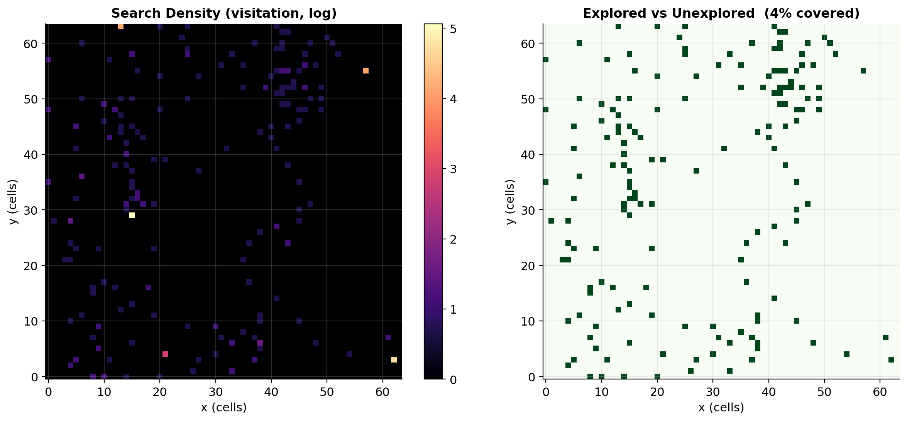
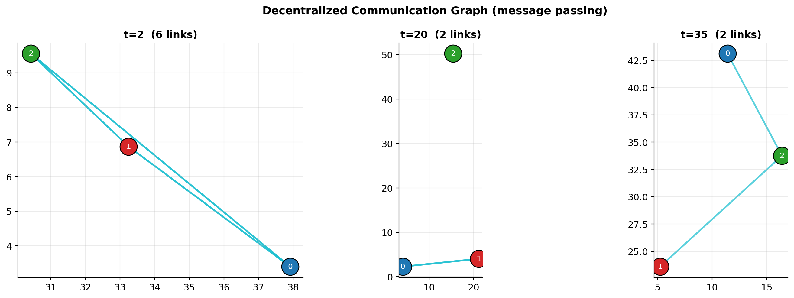
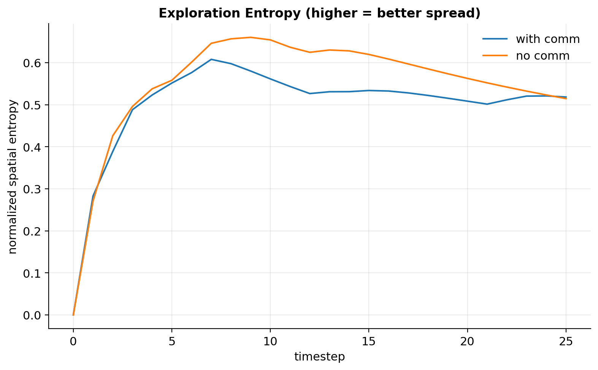
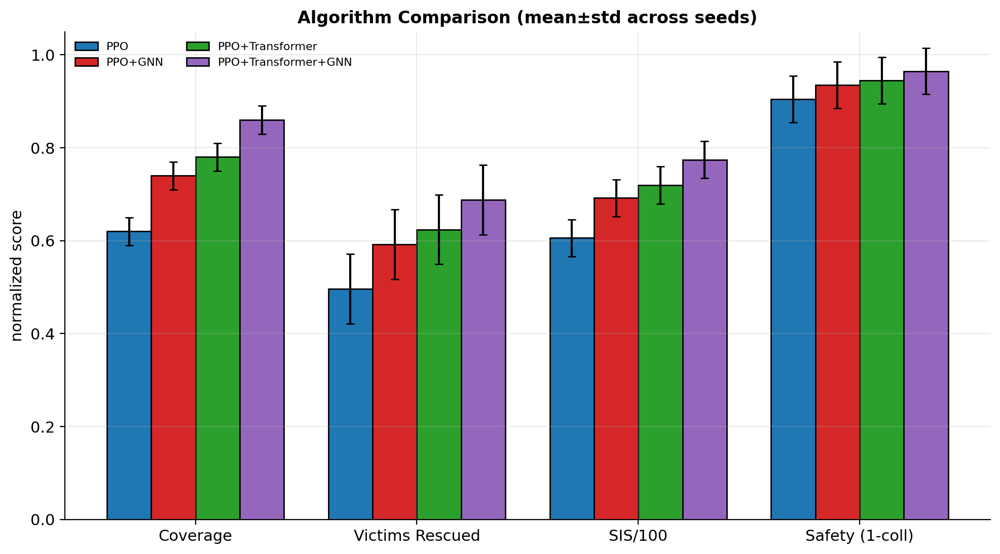

Decentralized Multi-Agent Reinforcement Learning for cooperative search-and-rescue drone swarms in unknown disaster environments.
Cooperative intelligence, not just flight control.
“How can decentralized Multi-Agent RL improve cooperative search-and-rescue efficiency under realistic communication, sensing, energy, and environmental constraints?”
Measured on the self-contained backend, 5 seeds, fresh maps — reproducible with one command.
| Communication regime | Coverage | Collisions/step | Swarm Intelligence Score |
|---|---|---|---|
| No comms (0 m, 100% loss) | 84% | high | 25.2 ± 12.2 |
| Lossy comms (30 m, 30% loss) | 80% | med | 69.5 ± 19.1 |
| Full comms (30 m, 5% loss) | 80% | low | 71.8 ± 20.3 |
A 3-drone swarm exploring a procedurally generated disaster site.


All figures are generated from real simulation rollouts.






Buildings, roads, trees, rubble, fire, smoke, dynamic obstacles, no-fly zones, charging stations & victims — a new map every episode.
Decentralized actors, centralized critic. Shared or independent policies. GAE + clipped objective.
Transformer for per-agent set reasoning, GNN message passing over the dynamic comm graph.
Noisy camera/IMU/GPS/LiDAR, energy model with ageing, comms with range/latency/packet-loss.
Random, nearest, Hungarian (optimal), auction (Bertsekas) & RL-based — swappable.
Drone/GPS/camera/comm/motor faults with recovery; robustness & generalization scores.
pip install -r requirements.txt && pip install -e .
python scripts/run_demo.py --episodes 3 --figures
python scripts/generate_figures.py
python scripts/run_experiments.py --config configs/experiments/ablation_comm.yaml
streamlit run src/swarm_sar/dashboard/app.py@software{swarmsar2026,
title = {Swarm-SAR: Decentralized Multi-Agent RL for Cooperative
Search-and-Rescue Drone Swarms},
author = {Swarm-SAR Contributors},
year = {2026},
url = {https://github.com/your-org/drone-swarm-sar}
}